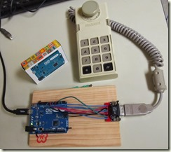
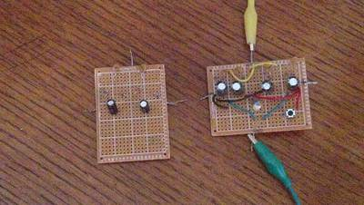

2016-02-11 - Nº 41

Editorial
Aqui está a Newsletter Nº 41 no seu formato habitual. Agora às quintas-feiras. Se gostar da Newsletter partilhe-a!
Todas as Newsletters encontram-se indexadas no link.
Esta Newsletter tem os seguintes tópicos:
Esta semana ficámos a saber que uma teoria de Einstein com cerca de 100 anos, relacionada com a teoria da Relatividade, sobre as ondas gravitacionais foi confirmada através da observação das mesmas por parte de cientistas do LIGO. Uma criança de 3 anos da Irlanda no Norte foi a primeira no mundo a receber um rim de um dador adulto com recurso a impressão 3D. Um reputado especialista em segurança - Bruce Schneier - escreveu um artigo onde equipara a IoT ao maior Robot do mundo. Por fim, a STmicroelectronics lançou uma plataforma open-source para ser usada em sistemas Linux para desenvolvimento de soluções embebidas baseadas em STM32.
Na Newsletter desta semana apresentamos diversos projetos de maker e na rubrica "Documentação" apresentamos quatro livros (eBooks) que podem ser descarregados livremente e que esta semana são sobre introdução ao Java, programação em C, um livro para administração de sistemas Linux baseados em Debian e um livro sobre HTML5 e as suas novidades. Sob a alçada a MagPI são apresentados também dois livros, um sobre a linha de comandos e outro sobre sensores em Raspberry Pi. Saiu estava semana a revista Hispabrick 24 e a newelectronics de 9 de Fevereiro.
 João Alves ([email protected])
João Alves ([email protected])
O conteúdo da Newsletter encontra-se sob a licença  Creative Commons Attribution-NonCommercial-ShareAlike 4.0 International License.
Creative Commons Attribution-NonCommercial-ShareAlike 4.0 International License.
Novidades da Semana ^
Gravitational Waves Detected 100 Years After Einstein's Prediction

"For the first time, scientists have observed ripples in the fabric of spacetime called gravitational waves, arriving at the earth from a cataclysmic event in the distant universe. This confirms a major prediction of Albert Einstein’s 1915 general theory of relativity and opens an unprecedented new window onto the cosmos. Gravitational waves carry information about their dramatic origins and about the nature of gravity that cannot otherwise be obtained. Physicists have concluded that the detected gravitational waves were produced during the final fraction of a second of the merger of two black holes to produce a single, more massive spinning black hole. This collision of two black holes had been predicted but never observed."
Northern Ireland toddler Lucy Boucher in world first kidney transplant using 3D printing
"A three-year-old girl from Northern Ireland has become the first in the world to have a life-changing kidney transplant using 3D printing. It is the first time in the world that 3D printing has been used to aid kidney transplant surgery involving an adult donor and a child recipient. Lucy Boucher, from Antrim in Northern Ireland suffered heart failure as a baby when she developed supraventricular tachycardia - meaning her heart was beating irregularly faster than normal. This resulted in her body, including her kidneys, being starved of oxygen."
The Internet of Things Will Be the World's Biggest Robot
"The Internet of Things is the name given to the computerization of everything in our lives. Already you can buy Internet-enabled thermostats, light bulbs, refrigerators, and cars. Soon everything will be on the Internet: the things we own, the things we interact with in public, autonomous things that interact with each other. These "things" will have two separate parts. One part will be sensors that collect data about us and our environment. Already our smartphones know our location and, with their onboard accelerometers, track our movements. Things like our thermostats and light bulbs will know who is in the room. Internet-enabled street and highway sensors will know how many people are out and about -- and eventually who they are. Sensors will collect environmental data from all over the world. The other part will be actuators. They'll affect our environment. Our smart thermostats aren't collecting information about ambient temperature and who's in the room for nothing; they set the temperature accordingly. Phones already know our location, and send that information back to Google Maps and Waze to determine where traffic congestion is; when they're linked to driverless cars, they'll automatically route us around that congestion. Amazon already wants autonomous drones to deliver packages. The Internet of Things will increasingly perform actions for us and in our name."
STMicroelectronics Attracts Linux Users to Free Embedded Development on STM32 Microcontrollers
"STMicroelectronics (NYSE: STM), a global semiconductor leader serving customers across the spectrum of electronics applications, has extended opportunities to design free of charge with its popular STM32 microcontrollers for Linux system users including professional engineers, academics, and hobbyists. Most Linux distributions are free, and open-source application software makes the Linux world attractive to technology enthusiasts. Until now, however, most development tools for embedded computing have been available only for Windows® PCs. The STM32CubeMX configurator and initialization tool and the System Workbench® for STM32, an Integrated Development Environment (IDE) created by Ac6 Tools, supported by the openSTM32.org community, and available at www.st.com/sw4stm32, are now both available to run on Linux OS."
Ciência e Tecnologia ^
New nanomanufacturing technique advances imaging, biosensing technology
"More than a decade ago, theorists predicted the possibility of a nanolens—a chain of three nanoscale spheres that would focus incoming light into a spot much smaller than possible with conventional microscopy. Such a device would make possible extremely high-resolution imaging or biological sensing. But scientists had been unable to build and arrange many nanolenses over a large area."
Light Chips Could Mean More Energy-Efficient Data Centers
"A microprocessor that uses optical connections instead of electrical wires to shuttle data around has long been the dream of chip designers, but the attempt to fabricate one has frustrated them for years. Now a prototype described in the journal Nature offers a promising and practical approach. The electronic-optical microprocessor, developed by a group of researchers at MIT, the University of California, Berkeley, and the University of Colorado, Boulder, integrates over 70 million transistors and 850 optical components. The system uses optical fibers, transmitters, and receivers to send data between a processor chip and a memory chip. In a demo, it runs a graphics program to display and manipulate a 3-D image, a task that requires using the internal optical connections to fetch data from memory and run instructions."
Cellular Cargo Delivery: Toward Assisted Fertilization by Sperm-Carrying Micromotors
"We present artificially motorized sperm cells—a novel type of hybrid micromotor, where customized microhelices serve as motors for transporting sperm cells with motion deficiencies to help them carry out their natural function. Our results indicate that metal-coated polymer microhelices are suitable for this task due to potent, controllable, and nonharmful 3D motion behavior. We manage to capture, transport, and release single immotile live sperm cells in fluidic channels that allow mimicking physiological conditions. Important steps toward fertilization are addressed by employing proper means of sperm selection and oocyte culturing. Despite the fact that there still remain some challenges on the way to achieve successful fertilization with artificially motorized sperms, we believe that the potential of this novel approach toward assisted reproduction can be already put into perspective with the present work."
Documentação ^
A documentação é parte essencial do processo de aprendizagem e a Internet além de artigos interessantes de explorar também tem alguma documentação em formato PDF interessante de ler. Todos os links aqui apresentados são para conteúdo disponibilizado livremente pelo editor do livro.
Livros

Introduction to Programming Using Java, Seventh Edition
"WELCOME TO the Seventh Edition of Introduction to Programming Using Java, a free, on-line textbook on introductory programming, which uses Java as the language of instruction. This book is directed mainly towards beginning programmers, although it might also be useful for experienced programmers who want to learn something about Java. It is certainly not meant to provide complete coverage of the Java language."
-
"C Programming is a tutorial teaching the C programming language. C is the most commonly used programming language for writing operating systems. Not only is C a popular language for operating systems, it is the precursor and inspiration for almost all of the most popular high-level languages available today. In fact, Perl, PHP, Python and Java are all written in C. C++, a common object-oriented language, was originally implemented as a preprocessor to C. C is also used in microcontroller programming because of it's easy access to the hardware through pointers. C is renowned for it's efficiency and portability, while still allowing this low-level access."
The Debian Administrator’s Handbook
"Accessible to all, this book teaches the essentials to anyone who wants to become an effective and independent Debian GNU/Linux administrator. It covers all the topics that a competent Linux administrator should master, from the installation and the update of the system, up to the creation of packages and the compilation of the kernel, but also monitoring, backup and migration, without forgetting advanced topics like SELinux or AppArmor setup to secure services, automated installations, or virtualization with Xen, KVM or LXC."
-
"This particular edition of Dive Into HTML5 is advanced by the diveintomark team. We work hard to add and update content, links, APIs, and actively maintain this fine resource; refreshing and reflecting the relevant and current state of HTML5, just as Mark Pilgrim did during his tenure. We attribute this work in the manner specified by Mark, and we make modifications to the site's content. We do not in any way suggest that he endorses us or our use of his work. We hope you do."
The MagPi Essentials - Conquer The Command Line
"For getting instructions from user to computer – in a clear, quick and unambiguous form – the command line is often the best way. Now – thanks to Raspbian on the Raspberry Pi – a new generation are discovering the power of the command line to simplify complex tasks, or instantly carry out simple ones."
The MagPi Essentials - Sense HAT
"What is the Sense HAT? Why is it in space? Learn about its amazing sensor-suite, its incredible mission aboard the ISS with Astro Pi, and build five fun and educational projects to help you sense the world around you. The best bit? The price starts at free…"
Revistas
-
"In this edition, the Arvo brothers present their stunning ALIEN building project book. There are interviews with epic diorama builder Michał Kazmierczak and Kevin Hinkle, Community Manager for LEGO’s Community Engagement division. Set reviews include the Brick Bank and Imperial Star Destroyer. Building guides covering such diverse topics as trees, modular landscaping, and WeBo robotics. There’s also a peek inside the new LEGOLAND Discovery Center in Osaka, and a whole lot more."
new electronics - 9 February 2016
"Analogue Design, Power, Interconnect. Embedded Systems Special. Embedded World Preview."
Modelos 3D ^
Com a disponibilidade de ferramentas que permitem dar azo a nossa imaginação na criação de peças 3D e espaços como o thingiverse para as publicar, esta rubrica apresenta alguns modelos selecionados que poderão ser úteis.
Bit Handle
Simple low profile bit holder, if you have fit issues scale the STL up or down.
Based on my T handle for hex keys seen here. http://www.thingiverse.com/thing:951909
Custom tool holder for pegboard
This is a simple and somewhat customized (screw holes, tool holes, number of tool holes) tool holder for pegboards. Instead of relying in the strength of plastic to stay in place, it uses 90-degree screws that confers it a lot more resistance.
The Ultimate box maker
My first try with OpenScad, the box is fully customizable. I hope you will enjoy with it, and show us many boxes made with.
If you play with the Round value you will go from the sharp to the round sides box If you want a chanfered box, set Resolution to 1.
To export each single pieces, just set the other to "NO" value. The Top and Bottom Shells are the same, so it's not necessary to export them two times.
Check the animation below to see how to setup your own box.
You can change the text shape with any font listed here .
Have fun ;)
Projetos Maker ^
Diversos Projetos interessantes.
AUDIOINO, the Arduino with audio bootloader
"For a long time I was building little microcontroller circuits which played with leds, make sounds or controlled little robots. I was always looking for a low cost circuit to program my gadgets because I like to give some of them to my friends as a present and I wanted to enable the people to download new programs to this gadgets. Imagine if you build a simple low cost led gadget which produces some light patterns. After a while you would become bored about the patterns the gadget produces. How nice would it be to download some new patterns? To do this, you need a bootloader in the microcontroller. The bootloader described in this article might be used to build a kind of “low cost” Arduino for daily use when you don't want to spend the money for a real Arduino but to be able to simply reprogram your circuit. I call it Audioino because it can be programmed from the audio line of a PC."
ArTICL: Arduino TI Calculator Linking Library
"In early 2010, we published a set of rudimentary routines to link graphing calculators to Arduino boards. In the intervening four years, a number of developers have given me feedback on the routines, including features that they'd like to see and improvements that could be made. Those improvements have made their way into a new library called ArTICL (Arduino-TI Calculator Linking). Like any good Arduino library, it contains a set of classes you can use in your own Arduino programs, plus a handful examples made by yours truly and other Cemetech members. We plan to continue to expand the library and eventually create one or more lesson plans that teachers could use to teach rudimentary electronics and programming with TI-83 Plus or TI-84 Plus calculators and Arduinos."
-
"This is a easy, portable and cheap DIY project to make a electromagnetic pulse (EMP). Follow the few steps and you got yourself your own EMP to disable or destroy electronic devices (this EMP is only strong enough to destroy a calculator)."
-
"After seeing a bunch of little kids having fun with bubble guns at Disneyland I decided I had to have one. Based on the joy observed in these kids I was convinced that owning a light up bubble blaster was a sure way to measurably improve joy and happiness in one's life."
-
"This sensor is very sensitive and can pick up electrical signals from anything that uses power. It displays the amount of interference it picks up by sequentially lighting 4 led's one after the other. I have tested it all around the house and its been kinda fun to see how different things compare. It can also be used to follow house electrical wiring inside the walls, yes its that sensitive."
Experimenting with Arduino and IKEA DIODER LED Strips
"A few weeks ago I found a DIODER LED strip set from a long-ago trek to IKEA, and considered that something could be done with it. So in this article you can see how easy it is to control the LEDs using an Arduino or compatible board with ease… opening it up to all sorts of possibilities."
-
"This is the hardware implementation for my Atmel 90E24 power line monitor project. The Atmel 90E24 is a complete energy management solution on a chip. It allows voltage, current, true power, apparent power, reactive power, power factor, phase angle, and line frequency to be accurately measured. Additionally it can measure energy and with firmware, you can convert the energy pulses into kilowatt hours."
Electric Labyrinth: A DIY Arcade Game
"Marble mazes (or labyrinths) provide a fun challenge. Their many twists and pitfalls test the player's speed, control, and accuracy. By the end of this instructable you will have constructed a labyrinth that would have impressed Daedalus, the famous Greek inventor. To enhance the game play, I decided to use an Arduino (because everything is better with an Arduino in it). I was inspired to create my electric labyrinth after viewing Tomatoskin's awesome instructable. "
Converting an ATX Power Supply Into a DC Bench Supply

"This article is the first in the “Projects” category. It’s a very inexpensive way to make a pretty good DC bench supply or dedicated 12 volt supply for working on projects or powering devices. As of this writing, a good quality and powerful ATX PSU (power supply unit) can be obtained online for about $20.00 or less. With the addition of a few inexpensive electronic parts (binding posts, LEDs, resistors, and some bits of hardware) a person with moderate electronic skills can do this project."
-
"No CGI, No tissue paper, and no Fooling around ! Ever since I First watched The Avengers I have wanted to make this Cube. Took me over three years to figure out how. With some help from Omni-Diy's Instructable on Rheoscopic Fluid I was able to Build my own ! I looked at building it with led's and tissue paper like most others did but I felt that it lacked the Depth, and Soul, that only CGI has been able to deliver."
Sable 2015 CNC + Arduino + GRBL = LunchBox CNC
"This is my 2nd Instructable and my 2nd Arduino powered CNC, this time around I up the difficulty level by deciding to make a self contained CNC unit by design my own electronics enclosures and placements. The steps of this Instructable are more descriptive than instructive, the videos are the best way to actually see how I did it. Nevertheless, I'll do my best to fill out the holes I missed in the videos."
Power Management Solutions: Battery Chargers
"The huge increase of portable devices during the last 10-15 years has lead to numerous companies seeking (and succeeding) to make significant profits in this market. Many consumer applications are now powered by accumulators, ranging from the omnipresent cellular phones to media players, handheld gaming devices, and navigation systems (that is to name only a few categories). “Portable” means lightweight, low power and of course, battery or accumulator that needs to be charged. Charging an accumulator is not rocket science, but doing it in an energy efficient manner, with tiny circuits that provide provision for many types of batteries and charging modes, represents a design challenge accepted by quite a few semiconductor companies, one of which is Freescale."
Power Tips: How to design a robust series linear regulator with discrete components
"There are applications that require loose output regulation and current less than 20mA. For such applications, a linear regulator built with discrete components is a cost-effective solution (Figure 1). For applications with tight output regulation and requires more current, a high performance LDO can be used."
HC-SR04 Ping Sensor Hardware Mod
"HC-SR04 ultrasonic sensor modules, also commonly called ping sensors, are practically a dime a dozen, with many Asia online retailers selling them in the $2 to $3 dollar range each. While possibly not intended for an end solution or product, these sensors offer a more affordable option for prototyping and application development compared to the original and possibly more well-known ping sensor sold by Parallax, or transducers sold by Maxbotix. "
-
"After several projects with PIC24 generating plain VGA signal, I managed to support the sprites in the real time. That gave me the idea to make the 2D video game, and my choice was the old Spectrum's game "Jumping Jack". Of course, I modified it and added some new details."
-
"The PIC 18 PIN (DIP) Development / Evaluations Board demonstrates the capabilities of Microchip’s 8-bit microcontrollers, specifically, 18 Pin PIC16F1847. It can be used as a standalone demonstration board with a programmed part. With this board you can develop and prototype with all Microchip’s 18 PIN PIC microcontrollers. The board has a Reset switch and status LEDs. On board 3.3 V and 5V DC regulators allows using 3V and 5V PICs, This board support both 3.3V low power and normal 5V operation. All I/O Pins out with 2xfemale headers"
Make a Weather Station With a Raspberry Pi 2
"Today I’m going to show you how to make sort of a mini weather station with a Raspberry Pi. This is an ongoing project of mine that I’ve been tinkering with so I’ll share my learnings with you. It started with a project I wrote about last month, and is an improvement on it."
RasPi Two-Player Arcade Coffee Table
"Here is my version of the Raspberry Pi arcade coffee table. I got the idea from other great instructables on here and wanted to share my experience with the build. The table can play games from multiple video game eras including NES, SNES, Sega, Playstation, and N64 (N64 requires the Rpi 2)."
Hardware Protection – OverVoltage and OverCurrent
"Power processing is one of the most important aspects on electronic design. The power is unique for a typical system because it gives the system life. Before starting to make the project for a power supply we need to analyze some aspects: Which kind of radio/electromagnetic interference is the device going to face ? What about maintenance requirements? And finally which environment conditions (temperature, humidity, vibrations) will the device be exposed to?"
-
"Making a great many things is very easy with Arduino microcontrollers. This Instructable tells you how to create a simple 1-button video game made from a handful of parts in the Arduino Basic Kit from 123D Circuits. It is a side-scrolling jumping game. This serves as a good starting point for creating your own games from simple maker electronics."
Build an Aquaponic Garden with Arduino
"Lots of creative aquaponics systems are being developed for raising fish and vegetables together in small spaces. Unfortunately — for you and the fish — most of these systems fail to address a number of common problems and so they end up on Craigslist or in the trash. And none of them are automated effectively at an affordable price."
-
"I've seen PCB business cards for a few years now on Hackaday, and I figured it was time to design one of my own. Most PCB business cards involve a microcontroller. I wanted to do something a bit different, so my card performs its intended function strictly with digital logic gate and D-type flip-flop (DFF) ICs."
Building a Capacitive Liquid Sensor
"A capacitive liquid sponsor relies on the fact the the capacitance or charge between 2 metal plates will change (in this case increase) depending on what material is between them. This allows us to create a level sensor that is safe for use with any liquid, this one will be used in a buggy with gasoline (petrol). One plate is hooked to ground. The other connects to pin 23. There is a 820K ohm resistor from pin 22 to 23. The sensor works by charging the capacitor (the water bottle) and measuring how long it takes to drain through the resistor."
Arduino + TFT --> Turtle Graphics
"The inspiration for this Instructable came from memories of the turtle graphics that were a component of TI Logo, a program that ran on the TI 99 4A home computer. And it came from the graphics capabilities of the Adafruit 2.8" TFT shield. Put one on your Arduino Uno, and let's see what happens. When you have downloaded the sketch that comes with this Instructable, you will have a pocket-sized implementation of turtle graphics on your Uno!"
The perfect Beer with Arduino: OpenArdBir project
"Open Ardbir is largely inspired by the original project formerly Braudino from Stephen Mathison and then upgraded and modified by Mike Wilson under the Mike’s Brewery appellation and is been completely reviewed by Max Nevi and Italian team (Alessio, Davide, Luciano, Luigi, Piero, Savio)"
3A Variable bench PSU with digital readout on colour display using ATMEGA8

"I am playing with electronics since i was a child and made numerous circuits.But still now,i didn't made any power supply unit for general purpose use.So tired of making PSU for each circuit,I decided to make a stable Bench PSU for general purpose use with some enhanced features.I decided to made the core power supply analog controlled and extra features digitally controlled."
PIC24 Bedside Table Alarm Clock
"Another year, another clock, but for the first time for my alarm clocks [1][2][3] I am not using an MSP430 but a PIC24 instead. Standby current is with 5.5 µA only slightly higher than that of my MSP430 based ones. Time keeping is done using the RTCC pheripheral, which I also used for the first time."
-
"This project will execute Conway's game of life on a 8x8 LED matrix. It has 2 buttons, one for setting up a random field, the other to start or stop the iterations."
-
"After VGA Pong, I have reproduced another color version of classical game for Arduino Uno and a VGA monitor: VGA Snake!"
ROBOT CONTROLLED BY HUMAN FINGERS

"This innovation comes from the hand movements that can controll a robot. In this project i use flex sensor and i am taking the flex sensor reading and putting this reading on to the intel edison. as a analog value and manipulating these values and used to move a robots. I made a simple four tyre robot controlled by Flex sensor."
-
"This Instructable is for making a programmable Pumpkin light with an ATTiny microcontroller. This was designed as a learning demo to introduce anyone (age 8+) into electronics and programming microcontrollers using the Arduino IDE."
-
"The idea behind this project was to create a cost effective device that could automatically charge and discharge multiple 18650 cells while determining the effective capacity of each individual cell. Individual cells can be binned by capacity, so multiple parallel packs with identical capacity can be put in series."
The Claw: A 3D printed robotic claw
"Why? Because everyone needs a robot Claw! This instructable will show you how to 3D print and build a simple robot claw that you can then attach to any of your Arduino projects. You could put it on a RC car, make a full robot arm or put it on a stick and use it to grab things."
-
"This circuit sets up the common 555 timer IC to output a PWM pulse that can be varied by the position of a connected potentiometer. PWM (pulse width modulation) is commonly used to control the speed of motors or brightness of LED's. With just a few common electronic components this is one of the simplest PWM circuits you can make."
-
"We are building another opensource SoloPCB project which is very enjoyable to build and use. In our electronics works, we frequently need to know the actual value of a capacitor. As you know, small sized SMD capacitors have no markings showing their values. Or there are lots of fake electrolytic capacitors which are rated much lower than their stated values. Sometimes the capacitors have large tolerances and we want to choose the best fit for our circuit. What we need is an accurate capacitance meter."
Digital Tic-Tac-Toe Using ATtiny85
"Tic-tac-toe is a classic game which requires no introduction. It is a pen and paper game played between 2 players (marked on paper as ‘X’ & ‘O’).The board setup consists of a 3x3 grid on which each player alternates between each moves. The player who succeeds in placing three respective marks in a horizontal, vertical, or diagonal row wins the game. This project is an attempt to recreate the classic game in a digital format. To spice things up a bit, instead of using the regular 2 player setup it uses an inbuilt AI mechanism to compete against the player."
Arduino based MPPT solar charge controller
"we use MPPT algorithm to get the maximum available power from the Photovoltaic module under certain conditions"
HDD Speaker (Hard drive Speaker)
"Before you start making the Speaker, make sure you have the following things"
5V & 12V Regulated Power Supply
"This project can be used to power up TTL and CMOS based projects, it provides 5 VDC & 12 VDC outputs with an onboard mains transformer. The project is based on the industry popular 7800 series voltage regulator in TO220 packages."
How To Make Wireless Electricity Transmission Circuit - DIY (Step By Step)
"Step By Step ( Even Soldering The Components ) Video On How To Make Simple Circuit Transfer Electricity Wirelessly . Its Amazing Project Also Its Very Chip And As Always Its Fun To Make . Anyone Is Welcome To Make Suggestions For Improvements. Good Luck With The Project!"
How to Work With Conductive Fabric
"Working with conductive fabric is fun and it's ideal for wearables, soft circuitry, e-textiles and other projects that take advantage of it's properties. Learning the basics will help you make design and material choices tailored to your application."
-
"Hello, I see you wan't to know how to make an NE555 timer based 3 octave synthesizer which fits in a tin. Well, you came to the right place :)"
-

"This instructable is the second version of Arduino clock. In this update many things including the structure, the motor and the code has changed, but the method of displaying time has not been changed. Each division for example between 1 and 2 there are further five divisions representing ten minutes each. In this project I have used a DC GEARED MOTOR because it is more accurate than a dc motor and does not have drifts. I have not used a stepper motor because it makes a lot of noise. In this clock the needle is stationary and the main dial or the barrel rotates."
MT-20: Functional 3D Printed Robot
"MT-20 is a 3D printed robot controlled by an Arduino board and actuated via 5 servos. The video above contains a few animation cycles, the 3D printing process, and the final assembly. This Instructable goes more in depth into the making of this project. This robot prototype is designed to be hybrid, in the sense that that if you don't have an Arduino and 5 servos, you can still build it by printing the included fake servo five times!"
Atmega Alarmclock & Thermohumidity meter
"First, let me introduce you my project. I made an Alarm clock with extended functionality & thermometer and humiditymeter. Everything started when my friend (who used to bring me some old electronic rubbish and I used to check if there's not something useful) brought me some cashing register display similar like that. When I first see them I knew that I will made from it alarm clock. I'm programmer and I used to program in many programming languages but this year I started programming in C for Atmel microcontrolers (attiny 85, atmega 8, atmega 328, atmega329, atmega 128 etc...). When I discovered DHT11 (temperature and humidity sensor) I programmed simple clock with thermo&humidity meter. I haven't got any case for my project so I imagine that when I cut off column from cashing register display case I will have the case of my dreams for my project."
-
"Create your own rc controlled led-strip for individual room illumination! Most rgb-led-strips are controlled by an infrared remote control. To turn it off or on or change the color, you have to stay in front of the receiver. This is boring and not really smart. To control the light in a cooler way, i developed a rc controlled board to set the right color of the strip. The rc code can be send from a raspberry pi, think of IFTTT. That's a lot smarter than the ir remote control."
EL Wire - Arduino Mini Pro - Relay Controller Module 6 Channels
"Searching in others Instructables I found many ways to control EL Wire with arduino but not all were like I wanted, so I decided to create my own version, maybe is not perfect but works. This EL Wire Module controlling 10 mts of EL Wire in two sections, 1 section for 5 mts and section 2 for the other 5 mts, You will need two EL Wire pocket inverters 3v, and need make a little modify to get it working with the module."
Today our article is about that how we can connect RF module with arduino and how to program
"You can get this Radio Frequency 315/433 MHz Transmitter-receiver Module easily from the electronic shop. we can use this mini transceiver module for many applications in our daily life like to make a remote control for cars, we can control or operate a Relay using this awesome module, think and use this module for your own wish but dont forget the maximum range of this module is only up to 90m you can extend this range by do a little trick with the antenna structure but i think 90m is enough ."
Low Resolution Arduino LED Clock
"This project is what I would like to think of as a successful failure. I have been working on a low resolution LED clock for the past few weeks and in the end, I regretfully overpowered my Arduino UNO - causing it to fry as well as burn out my LEDs. However, I did accomplish quite a bit and will share my process so that maybe someone can learn from my mistakes."
Microcontroller Clapper Switch
"I always thought the clapper so cool. For those who are lazy like me, turn on or off the bedroom light without getting out of bed, simple clap your hands is amazing. Thinking about it I projected one for me. Several projects of clappers can be found on the Internet, and most of them do not use microcontroller. I chose to use a micro planning future updates, such as turn on or off the light with 2 claps, the TV with 3 claps, DVD player with 4 and so on. Another update can be a time to turn off the device automatically."
Replacement LED driver for AN6877
"AN6877 is linear AF level meter IC produced by Panasonic and it is commonly found on many audio equipment. This chip is no longer manufactured by Panasonic and finding replacement chip for AN6877 is also quiet difficult. The circuit described in this article is design to replace AN6877 base LED drivers and it is based on commonly available components. This replacement LED driver is design using 10, MMBT3904/2N3904 transistors and it can easily modify to get necessary number of outputs."
Smart Remote Controlled Lights
"The concept of smart lights is very innovative concept, which fulfills our requirements with the minimum energy consumption. Using this Project you can make a Light that can be turned ON-OFF using A Remote Control. Apart from switching ON & OFF You can also set the Brightness of the Lights from the Remote Control."
-
"By using arduino and IR Receiver TSOP 1738 (in our project, you can use any ir receiver available) we can decode any infrared remote code into hex or some other format. Before constructing the circuit check datasheet of IR receiver having in your hand, hence you can connect proper bias pins and output pin. (IR = Infra Red light)"
Adding a USB power port to a switch for IoT
"Hi all! After some time out, due some hard work, I’m here again with a ‘one weekend’ project (in my case, with three childs. Sure it can be done in one afternoon!). I want to start some projects with Arduino and IoT, so the first things I need is an Arduino board, an Ethernet shield and a switch to connect it to the net. Also I need a power supply for the Arduino board, and I think that, better than a external USB AC wall adaptor or power supply, is modify the switch to add it a USB power port that can power the Arduino board. I’ve got at home a TP-Link TL-SF1008D, a simple 8 port 10/100 Mbps switch. So, let’s go to open it and add it the USB port!"
Ultimate Classic Game Console Joystick to USB Adapter

"This article describes how to use an Arduino Leonardo or Arduino Micro to make up to three classic console joysticks (e.g. Atari 2600, ColecoVision, and possibly others) available to a modern computer (e.g. Windows PC, Mac, or Linux)."
chipKIT Tutorial 7: Using Nokia 5110 LCD
"In Tutorial 4, we learnt interfacing an HD44780-based LCD to a chipKIT board for displaying alphanumeric output. Today, we will see how to connect a NOKIA 5110 graphical LCD (used in Nokia 5110 cell phones), which is a 84×48 pixel monochrome display of about 1.5? diagonal in size. The display can be used for graphics, text, and bitmaps."
Tesla Free Energy Air Circuit Design and Testing

"This video demonstrates a circuit design I found on YouTube called a Nikola Tesla Free Energy Air Circuit. That video showed a hand drawn circuit diagram that looked simple so I decided to build one. Actually, I ended up building a few. This instructable will demonstrate two of the circuits I made. One is just the basic design and the other is two circuits wired in series with a push button to control an led. I connect the circuits to my house ground and an antenna that was already mounted to the top of my house. The antenna was not being used and had been there since I moved in years ago."
-
"One of the first projects I did with an Arduino was a Christmas lights garland. In fact, it was made of a simple RGB LED strip cut in two, as Arduino has only 6 hardware PWM outputs. I didn’t want it to display trivial rainbows and random colors – after all, a Chinese controller that came with the strip was pretty capable of doing that – I wanted it to show something meaningful. Like time and outside temperature. As an RGB strip can show only one color at a time it is effectively a single RGB LED multiplied many times, so my task was basically to invent some way of showing information on a single RGB LED – hence the OnePixel working title."
That's all Folks!